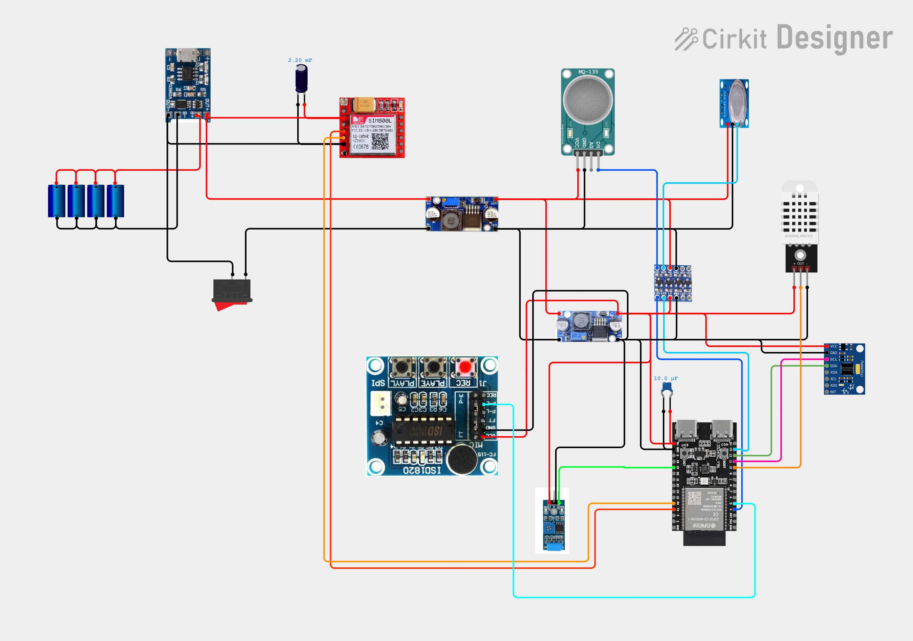

Senzori
Monitorizati continuu, in paralel.
Proiect 4
Detectie in timp real · Alertare instant · Siguranta acasa
Stack
WiFi (WebSocket) + SIM800L (SMS) + alarma sonora locala (ISD1820).
Monitorizati continuu, in paralel.
Gaz, fum, foc, seismica, cutremur (+ multipla).
WiFi/WebSocket + SMS (plus sirena locala).

Ce face sistemul
Incendiile, scurgerile de gaz si cutremurele pot produce victime pentru ca nu sunt detectate la timp, iar sistemele comerciale pot costa sute de euro.
Solutia: un dispozitiv DIY bazat pe ESP32-C6 care monitorizeaza continuu 7 senzori si alerteaza proprietarul in sub 1 secunda prin 3 metode simultan:
Flux
Gaz / fum / temperatura / vibratii / acceleratie.
Task-uri FreeRTOS ruleaza in paralel, fara blocare.
Telefon vibra + suna, SMS trimis automat, sirena locala porneste.
Hardware
Creierul sistemului.
Gaz / fum / CO2.
Temperatura + umiditate.
Vibratii seismice + accelerometru 3D.
SMS prin retea GSM.
Aplicatie pe telefon + LED RGB (12 stari).
Schema
Diagrama este inclusa din prezentare.

Cum functioneaza
8 procese ruleaza simultan — fiecare senzor are propriul “fir de executie” independent.
alarm_handler — decide ce alarma se declanseazasim_init — initializeaza modemul GSMsw420 + mpu — monitorizeaza vibratiilemq5 + mq135 — monitorizeaza gazele si fumuldht22_task — citeste temperatura si umiditatealed_task — animeaza LED-ul RGBAplicatia pe telefon
Reteaua se numeste AlarmaSenzori.
Din setari, ca la orice WiFi.
Pagina se incarca direct din ESP32.
Alarme in sub 100ms, fara intarziere.
Vibratie 5–10s + sunet + notificare.
Logica
MQ-5 detecteaza · puls rapid 440↔880 Hz
MQ-135 detecteaza · bip lung 1000 Hz
Fum + Temp > 50°C · ton ascendent 600→2000 Hz
SW-420 vibreaza · puls grav 80–120 Hz
SW-420 + MPU6050 · ton profund 60 + 180 Hz
2+ pericole simultan · sirena 500↔1500 Hz sweep
Timer alarma
LED + App
Solutii
portDISABLE_INTERRUPTS();
// citire bit-bang precisa
for(i=0;i<40;i++){
while(gpio==0);
pulse=esp_timer_get();
while(gpio==1);
if(pulse>40us) bit=1;
}
portENABLE_INTERRUPTS();FreeRTOS poate intrerupe citirea la microsecunde critice; intreruperile sunt blocate doar pe durata citirii.
// 1. Trimite instant pe telefon
ws_send_all(json_alarma);
// 2. Porneste sirena in background
// (nu blocheaza WebSocket-ul!)
isd_trigger_async(6000);ISD1820 poate dura 6–9s; apelul asincron evita intarzierea pe telefon.
if(pkt.type==PING){
pkt.type=PONG;
httpd_ws_send_frame(req,&pkt);
return ESP_OK;
}
if(pkt.type==CLOSE){
sterge_client_din_lista();
}Chrome trimite PING la ~5s; fara PONG conexiunea se inchide si apar erori.
int bauds[]={9600,115200,57600};
for(b=0;b<3;b++){
uart_set_baudrate(bauds[b]);
uart_write('AT\r\n');
if(raspuns contine 'OK')
break; // gasit!
}SIM800L poate veni setat pe viteze diferite; se testeaza automat pana la “OK”.
Contributii
Componente, pini fara conflicte de boot, alimentare separata pentru SIM800L.
8 task-uri FreeRTOS, drivere senzori, intreruperi si timere de precizie.
AP, pagina HTML embedded in firmware, WebSocket bidirectional.
Masina de stari: simpla (5s), escaladare multipla (10s), detectie in timp real.
HTML5, sunete (Web Audio), vibratii, monitor serial live, afisare temp/umid.
Fixuri: DHT22, blocari WebSocket, deconectari SIM800L, intarzieri alarma.
Abilitati folosite
Abilitati folosite
Ce am realizat